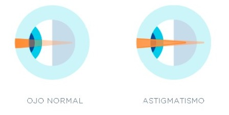

Astigmatismo
Descripcion general
El astigmatismo es un problema refractivo que se produce cuando la córnea (la capa externa y transparente del ojo) no presenta la misma curvatura en todas sus zonas. El astigmatismo afecta a la visión de cerca y de lejos.
En el caso del astigmatismo, la luz procedente de los objetos y que entra en el ojo se enfoca en más de un punto de la retina. Esto genera una visión borrosa y distorsionada, ya que en los ojos emétropes (sin graduación) las imágenes se enfocan en un único punto de la retina.
Dependiendo de la edad del paciente, de su agudeza visual y del tipo de astigmatismo que padezca o de la graduación que presente, puede percibir o no síntomas y estos pueden ser diversos. En general, el principal síntoma es la percepción borrosa o distorsionada, tanto de los objetos lejanos como de los cercanos. También es habitual la dificultad de percibir pequeños detalles a todas las distancias. En los casos en los que aparece asociado a la hipermetropía es habitual que el paciente sufra fatiga visual, enrojecimiento, picor y escozor de ojos, mareos o dolores de cabeza debido al sobreesfuerzo que realiza el ojo para enfocar las imágenes.
El astigmatismo puede estar determinado genéticamente y aparecer junto a determinadas patologías de la córnea, como el queratocono, o puede deberse a traumatismos o a determinadas intervenciones quirúrgicas.
¿Qué tipos de astigmatismo existen?
Existen varios tipos:

En prácticamente todos los casos, el astigmatismo puede operarse.
El astigmatismo no se puede prevenir, pero sí puede ser detectado a través de un examen oftalmológico completo y corregido posteriormente mediante el uso de gafas, lentes de contacto o mediante diferentes tipos de técnicas quirúrgicas.
¿Cómo se corrige el astigmatismo?
Hay diferentes opciones quirúrgicas para su corrección. La cirugía para el astigmatismo utilizando las técnicas láser (Lasik, PRK/Lasek) o la cirugía que consiste en el implante de una lente intraocular. Además, el astigmatismo puede ser corregido a la vez que se eliminan otros problemas refractivos, como la miopía, la hipermetropía o la presbicia. Debe ser el oftalmólogo el que, una vez valorado el caso concreto de cada paciente a través de las pruebas preoperatorias, indique qué tipo de operación es la más adecuada para corregirlo.